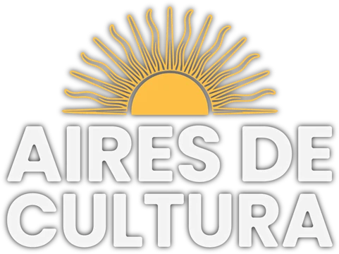

Aires de Cultura
Proyecto cultural que recorre pueblos de la provincia de Buenos Aires y del país para poner en valor su patrimonio histórico y ferroviario y el turismo rural. Lidero la estrategia y la producción audiovisual, y escribo las notas del sitio con criterio SEO.
- 85.000
- 73.000
- 33.000
- YouTube
- 25.000
- TikTok